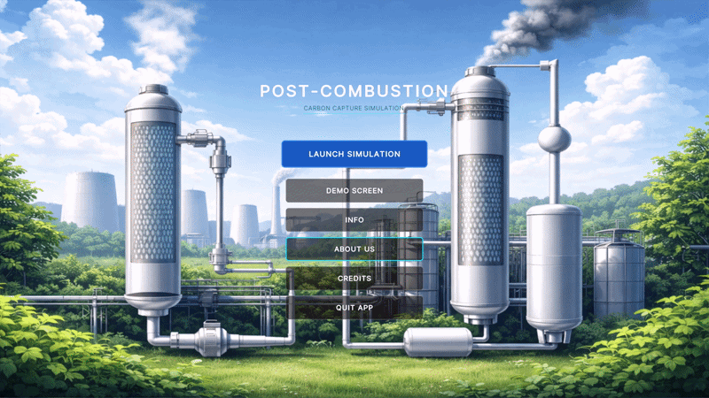

Visualisierung der Post-Combustion-CO₂-Abscheidung, von Anfang bis Ende
Ein fünfköpfiges Team hat eine interaktive Unity-Simulation der Post-Combustion-CO₂-Abscheidung für ein 1000-MW-Steinkohlekraftwerk gebaut — modelliert in Blender, geskriptet in C#, validiert gegen reale verfahrenstechnische Berechnungen. Meine Rolle: Unity-, Blender- & UI-Entwickler. Ich habe die 3D-Anlagenmodelle gebaut, das Unity-Simulationsverhalten programmiert, jeden Screen und jedes Interface gestaltet, den kompletten Demo-Screen umgesetzt und das Walkthrough-Video produziert. Studienprojekt im M.Sc.-Studiengang Digital Engineering an der OVGU Magdeburg.

Die Aufgabenstellung
Im Modul „Digital Engineering Project" der OVGU müssen Teams einen komplexen industriellen Prozess interaktiv begreifbar machen — kein statisches Schaubild, kein vorgerendertes Animationsvideo, sondern etwas, das ein Studierender oder Ingenieur anfassen kann und die Auswirkungen direkt sieht.
Unsere Aufgabe: Post-Combustion-CO₂-Abscheidung für ein Steinkohlekraftwerk — chemische Absorption mit Monoethanolamin (MEA), bezogen auf ein 1000-MW-Referenzkraftwerk. Das Ergebnis musste unter Windows installierbar sein, als geführtes Demo-Video mit englischen Captions und deutschen Untertiteln aufgezeichnet werden und durch einen verfahrenstechnischen Berechnungsbericht gestützt sein. Betreut von Dr.-Ing. David Broneske (Informatik) und Dr.-Ing. Nicole Vorhauer (Verfahrenstechnik).
Das Team
Eine fünfköpfige Zusammenarbeit über zwei Fachbereiche hinweg. Die Verfahrenstechniker waren für die Prozessauslegung und die Gleichungen hinter jedem Schwellenwert verantwortlich; die Digital-Engineers für die 3D-Modelle, die Unity-Szenen, das C#-Verhalten und alle Nutzer-Interfaces.
Der chemische Prozessablauf — die Reihenfolge der Schritte, die Massenbilanz-Annahmen pro Einheit, die Temperaturgrenzen — stammt von Salman und Rony. Ohne diese Arbeit wäre die Simulation nur Animation, kein Modell.
Der Prozess, in einem Absatz
Rauchgas aus einem Steinkohlekraftwerk tritt unten in den Absorber ein und strömt nach oben. Ein 30-Gewichtsprozent-MEA-Lösungsmittel rieselt im Gegenstrom von oben herunter und absorbiert das CO₂ chemisch zu rich MEA. Das rich MEA wird über einen Wärmetauscher in den Stripper gepumpt, wo ein Reboiler es so weit aufheizt, dass das gebundene CO₂ als konzentrierter Gasstrom freigesetzt wird. Das regenerierte lean MEA kehrt zum Absorber zurück, das freigesetzte CO₂ wandert in den Lagertank zur Kompression und Weiterverwendung. Das gesamte System hängt an der Temperatur — zu heiß im Absorber, und das Lösungsmittel absorbiert nicht mehr; zu kalt im Stripper, und es gibt nicht mehr frei, was es gebunden hat.
Ingenieurtechnische Grundlage — die echten Zahlen
Jede Dimension in der 3D-Szene und jeder Schwellenwert in den C#-Skripten lässt sich auf den Berechnungsbericht der Verfahrenstechniker zurückführen:
| Referenzkraftwerk | 1000 MW Netto-Steinkohlekraftwerk |
|---|---|
| Lösungsmittel | 30 wt% Monoethanolamin (MEA) in Wasser |
| Abscheideziel | 90 % des eingehenden CO₂ |
| Rauchgas-Strom | 3.500.000 Nm³/h (43,41 kmol/s) |
| Abgeschiedenes CO₂ | 232 kg/s → ≈ 6,68 Mt / Jahr (8000 Betriebsstunden) |
| Absorber-Höhe | 30 m (NTU = 15, HTU = 2 m) |
| Stripper-Höhe | 40 m (NTU = 20, HTU = 2 m) |
| Regenerationsenergie | ≈ 3,8 GJ / t CO₂ (im Bereich industrieller Benchmarks) |
Die 30 m Absorber-Höhe sind keine ästhetische Wahl — sie sind NTU × HTU. Die 125 °C Überhitzungsschwelle ist nicht beliebig — bei dieser Temperatur beginnt MEA zu degradieren und die Stripper-Effizienzkurve bricht in der Literatur ab.
Architektur
Die Anwendung besteht aus vier Unity-Szenen — Splash, Hauptmenü, Simulation und Demo — angetrieben von 11 C#-Skripten. Die Simulations-Szene ist das Herz des Projekts: ein zentraler SimulationManager fährt den gesamten Prozess als Coroutine namens RunSimulationSequence() ab, und mehrere unterstützende Manager übernehmen jeweils eine Aufgabe (Audio, Benachrichtigungen, Hover-Tooltips, Effizienz-Graph, Partikelsysteme, Überhitzungs-Watchdog).
Die sieben Phasen von RunSimulationSequence()
Eine Coroutine treibt den gesamten Prozess an. Jede Phase wartet mit einem eigenen WaitWithChecks(), sodass das Timing sauber pausiert, wenn der Nutzer auf Pause drückt — oder wenn der Überhitzungs-Watchdog auslöst.
- MEA-Dusche: Lean-Lösungsmittel beginnt oben in den Absorber zu strömen.
- Rauchgas-Einlass: CO₂-reiches Rauchgas tritt unten in den Absorber ein.
- Absorption: MEA reagiert mit CO₂; Partikelfarben und Emissionsraten ändern sich live mit dem Absorber-Slider.
- Lösungsmittel-Transfer: Rich MEA wird über den Wärmetauscher in den Stripper gepumpt.
- Strippen: Reboiler erhitzt das Rich MEA; weißer Dampf steigt auf, CO₂ wird freigesetzt.
- Kompression & Lagerung: freigesetztes CO₂ entsteht als 3D-Moleküle, die den Lagertank füllen.
- Lean-MEA-Rückführung: regeneriertes Lösungsmittel kehrt zum Absorber zurück, der Zyklus beginnt erneut.
Entscheidungen und Trade-offs
Referenz-Tabelle vs. kontinuierliches Modell
Die Verfahrenstechniker lieferten eine Referenz-Tabelle mit neun Stützstellen für die Abscheideffizienz vs. Temperatur (Absorber: 97 % bei 25 °C → 61,8 % bei 65 °C; Stripper: 78 % bei 85 °C → 94,5 % bei 110 °C). Ursprünglich war ein Polynom-Fit mit Live-Berechnung geplant. Wir haben uns für die Lookup-Tabelle entschieden — schnell im WebGL, exakt an den Referenzpunkten des Betreuers, und ein Hinweisetikett am Graphen kommuniziert klar, dass es sich um eine didaktische Hilfe handelt, nicht um ein verfahrenstechnisches Modell.
Für ein Lernwerkzeug schlägt eine deterministische Referenz-Tabelle einen Polynom-Fit, der Abweichungen still überdeckt. Das Hinweisetikett am Graphen macht den Modellumfang explizit, statt vorzutäuschen, die Lookup-Tabelle sei eine kontinuierliche Physik-Engine.
Erst Blender, dann Unity
Alle sechs Anlagenkomponenten — Absorber, Stripper, Reboiler, Wärmetauscher, Kompressor, CO₂-Lagertank — wurden in Blender 4.x modelliert, bevor irgendetwas in Unity wanderte. Die interne Packungsstruktur in den Säulen entstand als wiederholendes Mesh-Muster; Rohrleitungen wurden über Blenders Curve-to-Mesh-Workflow gebaut, sodass die Biegungen glatt sind, ohne dass jeder Polygon-Punkt manuell gesetzt werden musste. Jedes Modell wurde als FBX mit Apply Transform aktiviert exportiert — ohne dieses Flag landet Blenders Z-up-Koordinatensystem in Unitys Y-up-Welt um 90 ° verdreht und im Maßstab 1/100.
UI Toolkit (UXML/USS) für Menüs, UGUI für die Simulation
Hauptmenü und Demo-Screen nutzen Unitys neueres UI Toolkit, weil die Layouts überwiegend deklarativ sind und vom USS-Styling profitieren. Die Simulations-Szene bleibt beim älteren UGUI-Canvas-System, weil sie World-Space-Depth-Sorting und TextMeshPro-Labels braucht, die direkt an 3D-Objekten hängen — beides wird vom UI Toolkit noch nicht so sauber unterstützt. Beides in einem Projekt zu mischen fühlt sich auf dem Papier falsch an, war in der Praxis die richtige Entscheidung.
Eine Simulations-Szene, nicht sieben
Frühes Experiment: eine Unity-Szene pro Phase. Sah sauber aus, bis kontinuierliche Animation zwischen Phasen nötig wurde (Rich MEA, das vom Absorber zum Stripper fließt, ist kein Szenenwechsel — das ist der Punkt). Eine einzige Simulations-Szene mit phasen-gekoppelten Sichtbarkeitsgruppen löste sowohl das Übergangsproblem als auch das Asset-Duplizierungsproblem in einem Schritt.
Dinge, die kaputtgingen (und wie)
Lohnt sich zu dokumentieren, weil jedes Unity-auf-WebGL-Projekt irgendwann an diese Klippen stößt:
- Unicode-Zeichen verschwanden im Standalone-Build. Das Schließen-Symbol ✕ rendert im Editor sauber und fehlt in der .exe. Unitys Standard-Font-Atlas entfernt seltene Unicode-Zeichen beim Build. Fix: durch das ASCII-X ersetzen.
- FBX wurden im Maßstab 1/100 importiert. Blenders FBX-Exporter wendet standardmäßig einen 0.01-Skalierungsfaktor an. Apply Transform in den Export-Einstellungen backt die korrekte Skalierung ein.
- UI-Image-Overlays zeichneten immer über das 3D, nie hinein. Canvas-Elemente werden immer über die Szene gemalt. Für den Equipment-Highlight-Effekt nutzten wir ein Material mit
renderQueue = 4000, sodass es korrekt am Depth-Sorting teilnimmt. - Effizienz-Graph blieb klein nach dem Maximieren des Fensters. Die Anker waren verrutscht.
GraphAreaRectTransform auf Full-Stretch (0,0 → 1,1) zurücksetzen, danachShowGraph()nach 2 FramesWaitForEndOfFrameaufrufen, damit Unitys Layout-System seine Neuberechnung abschließt. - Benachrichtigungs-Karten stapelten sich übereinander bei schnellen Phasenwechseln. Aufruf von
RepositionCards()bei jedem Add/Remove löste das Vertical-Layout. - UI-Toolkit-Tooltips wollten nicht rendern. Die Standard-Tooltip-API feuerte in unserer Szene nicht. Mit
MouseEnterEvent/MouseLeaveEvent-Callbacks neu implementiert — gleicher sichtbarer Effekt, anderer Code-Pfad. - PlasticSCM-Workspace blockiert. Vier Root-Dateien —
plastic.selector,plastic.wktree,plastic.changes,plastic.workspace— manuell löschen, dann öffnet sich der Workspace wieder sauber.
Das Demo-Video
Ein 2 Minuten 57,5 Sekunden langes Video gehört zum Build. Unity Recorder hat die Simulation in 1080p H.264 aufgezeichnet, mit sieben skriptbasierten Segmenten passend zu den Bildschirm-Highlights (38 s Intro, 23,5 s Absorber, 16 s Wärmetauscher, 19,5 s Stripper, 14 s Reboiler, 32 s Kompressor + Lagerung, 34,5 s Abschluss). Ein animierter Green-Screen-Presenter von Animaker wurde in Adobe Premiere Pro per Ultra-Key über die Unity-Aufnahme komponiert. Englische Captions per Premieres Speech-to-Text automatisch erzeugt und handgeprüft; deutsche Untertitel aus einer separat erstellten SRT-Datei als eigener Untertitel-Track importiert.
Werkzeuge, von oben nach unten
- Unity 2022 LTS — Engine für alle vier Szenen und den WebGL-Build.
- C# / .NET — 11 Skripte, MonoBehaviour-basiert, Singleton- + teilweise ECS-Organisation.
- UI Toolkit (UXML/USS) — Hauptmenü und Demo-Screen.
- Unity Canvas (UGUI) + TextMeshPro — Simulations-HUD, Slider, Graph, Überhitzungs-Overlay.
- Blender 4.x — sechs ingenieurgenaue 3D-Modelle, als FBX exportiert.
- PlasticSCM + GitHub — Versionskontrolle während der Entwicklung, GitHub für die finale Distribution.
- Unity Recorder · Animaker · Adobe Premiere Pro — Demo-Video-Pipeline.
- Figma · Draw.io · Mermaid — UI-Design, Klassen-Hierarchie, Aktivitäts- und Sequenzdiagramme.
Was ich heute anders machen würde
- Den 9-Punkt-Lookup durch eine Polynom-Regression ersetzen, über den vollen Bereich beider Slider. Die diskrete Tabelle funktioniert, aber das Hinweisetikett am Graphen wäre mit einem glatten Fit überflüssig.
- Die Simulation auf VR portieren. Um eine 30-m-Absorber-Säule in Originalgröße herumlaufen zu können, würde stärker wirken als ein 24"-Monitor.
- Einen Live-Anlagendaten-Stream an das bestehende Manager-Muster anbinden, sodass dieselbe UI als Monitoring-Dashboard funktioniert. Der Datenfluss läuft bereits einseitig durch
SimulationManager— die Schnittstelle existiert. - Das
EnhancedHoverTooltipauf alle sechs Anlagenkomponenten ausweiten. Aktuell deckt es nur einen Teil ab.
Ergebnisse
- Alle fünf Projektziele erreicht: 3D-Visualisierung, Echtzeit-Slider-Feedback, Lösungsmittel-Zirkulations-Animation, siebenphasiges Benachrichtigungs-Panel und ein Demo-Video mit Untertiteln.
- Standalone-Windows-Build läuft sauber bei 1920 × 1080. WebGL-Build auf Unity Play ohne Installation spielbar.
- Ingenieurtechnische Zahlen gegen Literatur validiert (Regenerationsenergie ≈ 3,8 GJ/t CO₂, optimales Stripper-Fenster 105–115 °C) und gegen die Referenz-Tabellen des Betreuers.
- Eingereicht als finale Studienleistung im Modul „Digital Engineering Project" der OVGU, gemeinsam betreut von Informatik- und Verfahrenstechnik-Instituten.
Fragen zum Unity-Build, zur Blender-Pipeline oder zur verfahrenstechnischen Grundlage? hashwanthghanta@gmail.com · GitHub